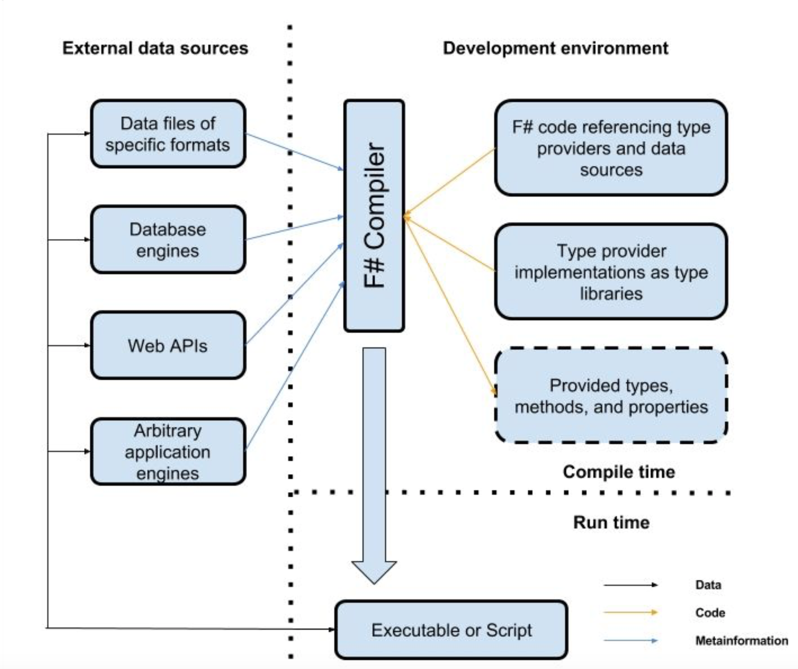
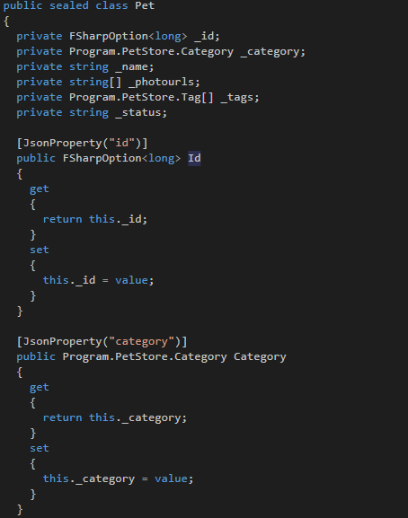

Full name: index.People
Full name: Microsoft.FSharp.Core.ExtraTopLevelOperators.printf
from Microsoft.FSharp.Core
Full name: Microsoft.FSharp.Core.Option.iter
Full name: Microsoft.FSharp.Core.ExtraTopLevelOperators.printfn
type LiteralAttribute =
inherit Attribute
new : unit -> LiteralAttribute
Full name: Microsoft.FSharp.Core.LiteralAttribute
--------------------
new : unit -> LiteralAttribute
Full name: index.designConnectionString
Full name: index.GetTopSellers
Full name: index.query
Full name: index.cmd
Full name: index.schema
Full name: index.PetStore
Full name: index.store
Full name: index.taggedPets
Full name: index.pet
val string : value:'T -> string
Full name: Microsoft.FSharp.Core.Operators.string
--------------------
type string = System.String
Full name: Microsoft.FSharp.Core.string
val byte : value:'T -> byte (requires member op_Explicit)
Full name: Microsoft.FSharp.Core.Operators.byte
--------------------
type byte = System.Byte
Full name: Microsoft.FSharp.Core.byte
type EventHandler<'TEventArgs> =
delegate of obj * 'TEventArgs -> unit
Full name: System.EventHandler<_>
--------------------
type EventHandler =
delegate of obj * EventArgs -> unit
Full name: System.EventHandler
The marvels of F# type providers
Alexander Mogilka
@alxmglk
The era of rich information spaces
 Most modern systems integrate with a bunch of external information sources
Most modern systems integrate with a bunch of external information sources
Adapters for an external data source
- hand-written static library
- generated static library
- dynamically-typed information representation
The traditional bridging mechanisms are deficient
- hand-written libraries do not scale to information spaces with large metadata-size
- workflows involving code generation are clumsy and do not integrate well with exploratory programming
- dynamically-typed bridging mechanisms discard the benefits of strongly-typed programming
Type provider is a cure
A compiler plugin with access to the external world that augments the set of types that are known to the type-checker and compiler.
Type provider mechanics
The benefits of type provider
- scales to information sources with large quantities of metadata
- seamless integration with development tools
- enables the use of code completion and interactive type checking
- open architecture
Type providers in the wild
Let's see how some of the most popular type providers could be used in the real life
Json Provider
1: 2: 3: 4: 5: 6: 7: 8: 9: 10: 11: 12: 13: 14: |
|
Json Provider is an erasing provider
It doesn't really create any new types in the output assembly
1: 2: 3: 4: 5: 6: 7: 8: 9: |
|
Sql Client Provider
1: 2: 3: 4: 5: 6: 7: 8: 9: 10: 11: 12: 13: 14: 15: 16: 17: 18: |
|
Sql Client Provider Internals
-
it uses a special system procedure to retrieve metadata of query result
1: 2: 3: 4:
use cmd = new SqlCommand("sys.sp_describe_undeclared_parameters", connection, CommandType = CommandType.StoredProcedure) cmd.Parameters.AddWithValue("@tsql", commandText) - it's an erasing type provider so under the hood we have only ADO.NET classes along with a few custom wrappers
Swagger Provider
1: 2: 3: 4: 5: 6: 7: 8: 9: 10: 11: 12: |
|
Swagger Provider is a generative type provider
The static model is put into the output assembly so it could be consumed from any .NET language
How about .Net Core support?
As it stands only erasing type providers are currently supported starting from .NET Core 2.0
And only the providers from FSharp.Data package are available for usage (with some trickery)
Creating a type provider
Implement ITypeProvider interface
1: 2: 3: 4: 5: 6: 7: 8: 9: 10: 11: 12: 13: 14: 15: 16: 17: 18: |
|
Looks scary, isn't it?
Solution: TypeProviders StarterPack
There is FSharp.TypeProviders.StarterPack package which provides the basic implementation of the type provider for namespaces.
Unfortunately this package isn't suitable for .Net Core projects so the only resort for now is to reference the files via Paket or just include them manually.
https://github.com/fsprojects/FSharp.TypeProviders.StarterPack
Inherit from TypeProviderForNamespaces
1: 2: 3: 4: 5: 6: 7: 8: 9: 10: 11: 12: 13: 14: 15: 16: 17: |
|
Use Code Quotations
1: 2: 3: 4: 5: |
|
This feature lets you generate an abstract syntax tree that represents F# code
Dont't forget to mark the type provider assembly
The assembly which exposes type provider should be marked with the following attribute to make the provider discoverable by a compiler
1:
|
|
Demo
Build a dummy erasing type provider for .NET Core 2.0
Conclusion
- type providers is a killer feature which surely augments the capabilities of F# and gives us a neat approach for consuming various information sources
- a big obstacle for the further development is a poor support of the type providers on .Net Core
Questions?
Useful links
- https://www.microsoft.com/en-us/research/wp-content/uploads/2016/02/information-rich-themes-v4.pdf
- http://blog.mavnn.co.uk/type-providers-from-the-ground-up/
- https://github.com/Microsoft/visualfsharp/issues/3303
- "F# Design Patterns" by Gene Belitski (the chapter dedicated to type providers)